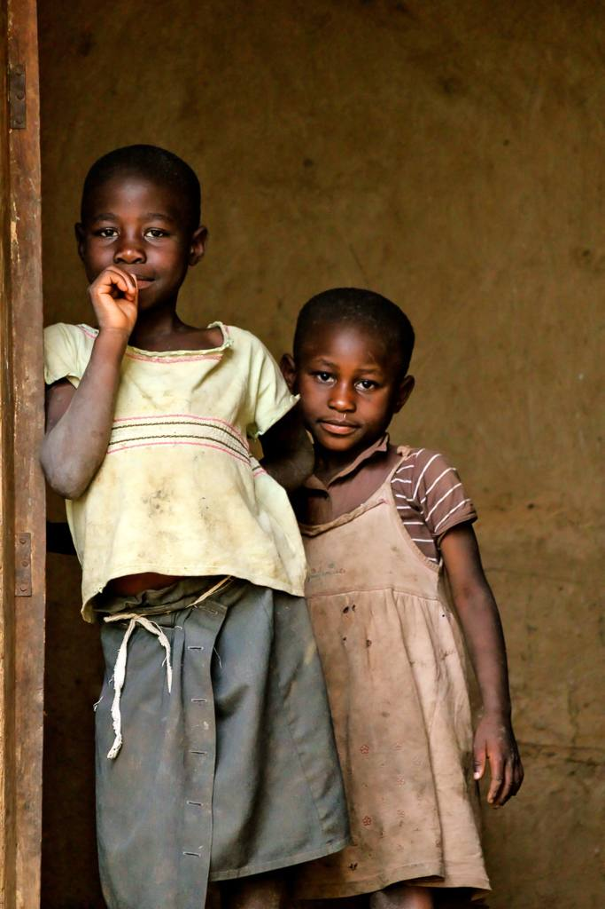
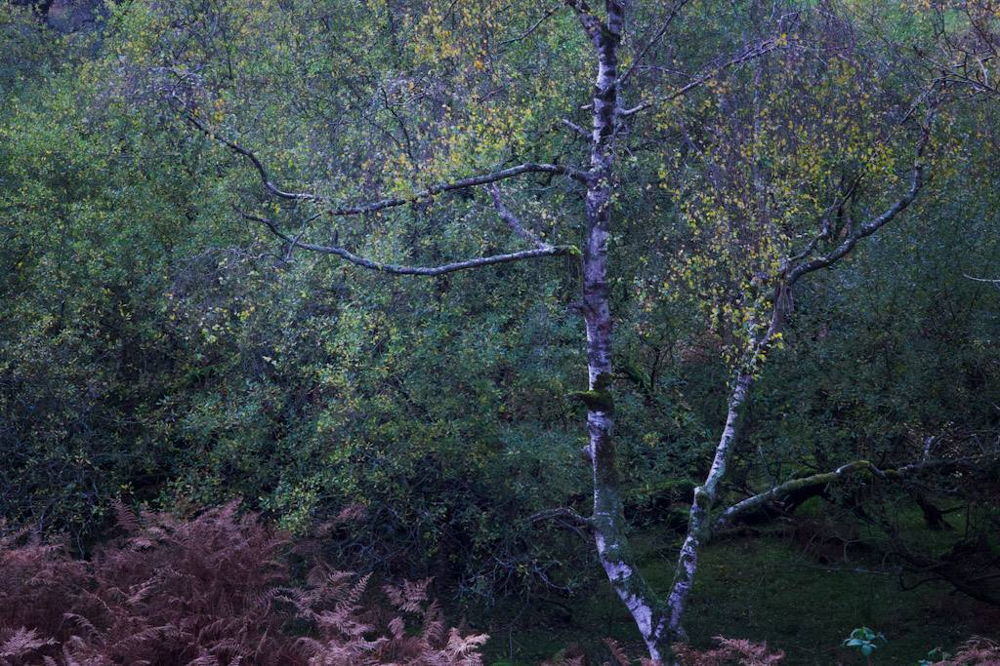
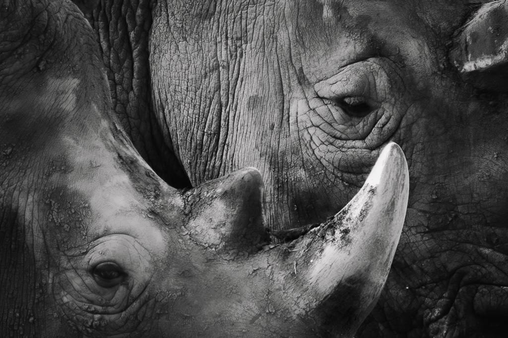
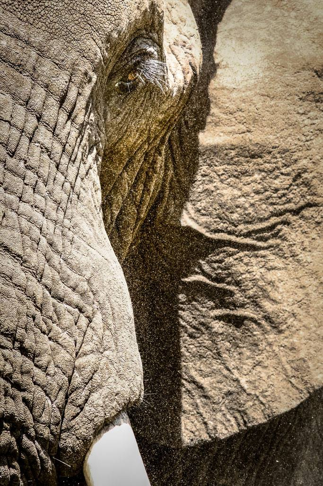
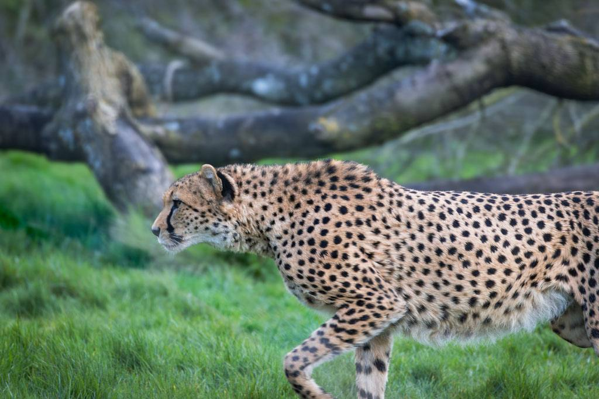
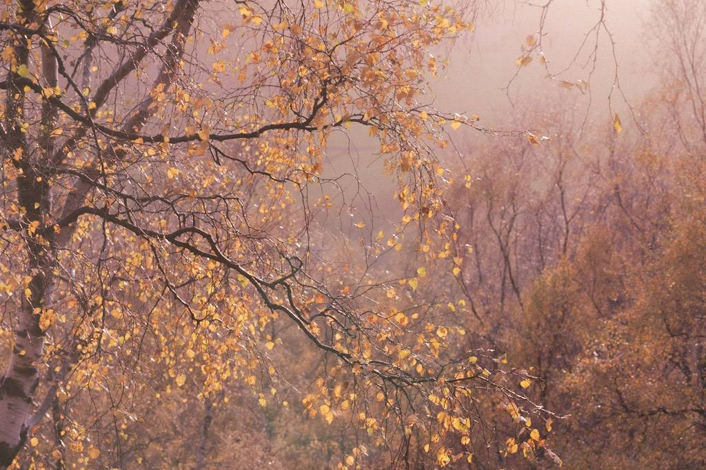
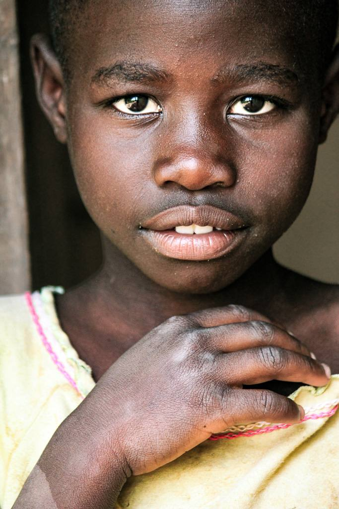
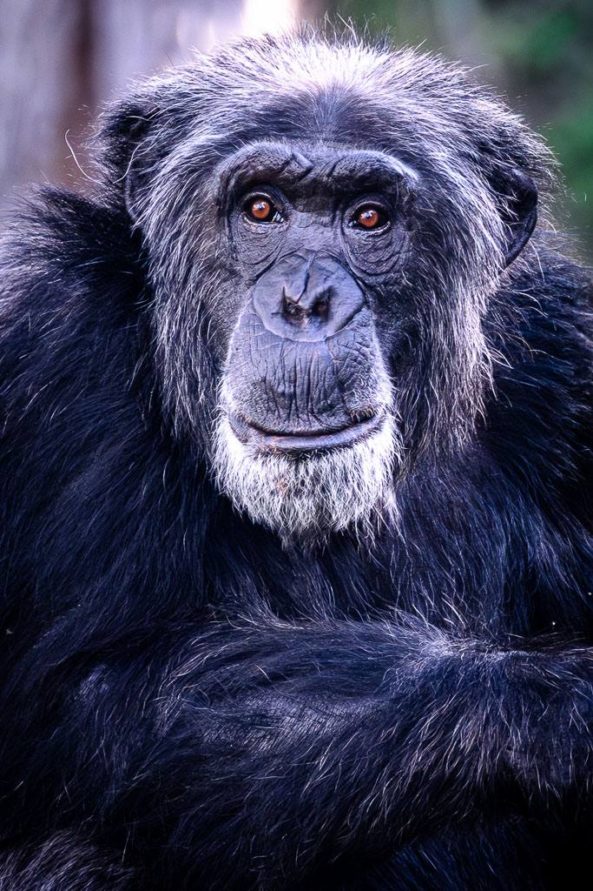

What I Do
Photography that works as hard as your sustainability strategy



Over 50,000 companies now face mandatory sustainability reporting under CSRD and equivalent global frameworks. Most are still filling those reports with stock photography. I'm here to change that — with verifiable, geo-tagged, minimally-edited images that serve as genuine visual evidence of your impact.
I've spent years photographing the natural world with one guiding principle: the image must be true. That same principle is exactly what the corporate world needs right now. Greenwashing legislation is tightening. Investors are scrutinising. Regulators are watching. The companies that will stand out are the ones whose visual storytelling is as rigorous as their data.
Every image I deliver carries embedded metadata — location, date, time. Your photography becomes evidence, not decoration. In a world where greenwashing fines can reach 4% of annual turnover, that distinction matters enormously.
I don't manufacture a reality that doesn't exist. My images are honest representations of what I found — the progress, the people, the places. That integrity is what makes them credible to rating agencies, investors, and the public alike.
I'm not just a photographer who has read about ESG. I have a background in sustainability, understand the language of impact reporting, and know exactly what visual evidence each pillar of your ESG framework requires. I speak your language — and I translate it into images.
My work in the field — documenting wildlife, habitat, and the people who protect both — means I understand the natural systems your environmental commitments are meant to serve. That context makes every image more powerful.


The Corporate Sustainability Reporting Directive (CSRD) has brought over 50,000 companies into mandatory sustainability reporting for the first time. Simultaneously, the EU's Green Claims Directive is introducing fines of up to 4% of annual turnover for unverifiable environmental claims.
In this environment, a stock photo of a forest is not evidence of your environmental commitment. A geo-tagged, dated photograph of your actual operations, your real supply chain, your genuine community impact — that is evidence. That is what I provide.
Explore ESG StorytellingEvery photograph here is an authentic, unmanufactured moment. This is what verifiable visual storytelling looks like.






I speak at conferences, corporate events, and sustainability summits about the power of authentic visual storytelling in the age of ESG accountability. My talks bridge the gap between the natural world and the boardroom — and leave audiences with a different relationship to both.
Book a Talk
Shifting PerspectivesWhat does it mean to be human in an age of algorithmic content? And what does that question have to do with why authentic photography matters more than ever for the organisations trying to prove their impact?
Read More Field Notes
Field Notes
A reflection on what the natural world teaches us about resilience, and why the organisations investing in genuine environmental impact deserve photography that does justice to that work.
Read More